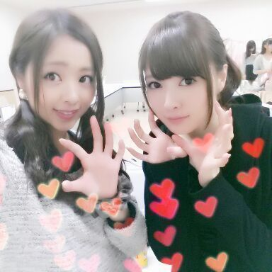

はい 〜 (*´∇｀*)
大好きな まいやんちゃんと.
ど-も こんばむわ. Rottyデチュ.

本能的に『あっ、ハートをつけなくてはっ( ; **)』 ってなってつけた‥。
もう11月ですね... ぅんぅん (しんみり)笑
夕方になると何故か寂しゅうキモチに‥
一肌恋しくなり‥
誰かに電話してかまってもらう〜(*´∇｀*) ってね 笑
かまちょ かまちょ。
今年もラスト２ヶ月〜
あ！『ラスト２ヶ月』と思えばヤル気出る！！
この２ヶ月めっちゃ頑張ったら
なんか来年なった時キモチ良さそう。
とりあえずねっ
ラスト２ヶ月 共に頑張りましょーえ！！
んね\(´ω`)/?
にしても コメントを見ていると
なんだか 11月生まれの方が
たくさんいる様に感じる、、、
Rottyが お祝いしまちゅ.
11月生まれの皆さん ！！
『☆ Happy birth day ☆』
ぴょん.
明日は まひろ あみ ゆうりで
ヴィッセル神戸VS．京都サンガF.C.
「楽天グループデー」イベントに
参加します！！
よろしくお願いします♪
髪の毛 ４つに別れた。
ビョーン ビョーン ビョーン ビョーン
( ; ゜Д゜)
ぢゃあね、皆ちゃん
おやすみなちゃい.. ♪love